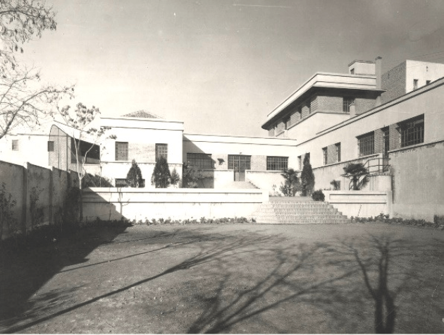
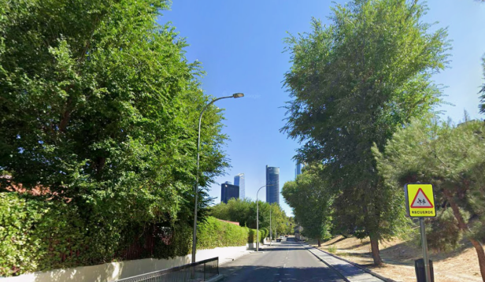
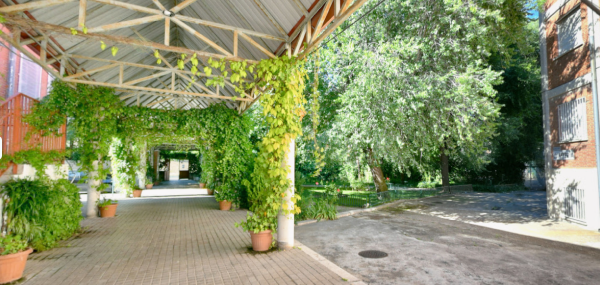
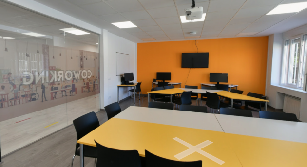
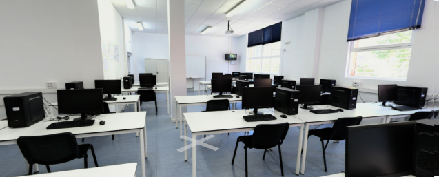

02 / EL CENTRO
Descubre el instituto: sus instalaciones, servicios, entorno y todo lo que hace del centro un espacio de aprendizaje y crecimiento.
Conocer el instituto
El IES Tetuán de las Victorias es un centro pionero en la enseñanza pública de la Formación Profesional en España. Fue uno de los tres primeros centros creados para establecer un sistema reglado de enseñanzas profesionales dentro del marco del Estatuto de Formación Profesional de 1928.
A lo largo de su historia, el centro ha ido adaptando su oferta educativa a las necesidades formativas y profesionales de cada época. Actualmente, imparte Ciclos Formativos de Formación Profesional pertenecientes a tres familias profesionales:
- Administración, cuya enseñanza se inició en 1977.
- Informática, que se imparte desde 1985.
- Turismo, incorporada al centro en 2004.
De esta forma, el instituto combina su trayectoria histórica con una oferta formativa adaptada a diferentes sectores profesionales, especialmente en áreas relacionadas con la administración, las nuevas tecnologías y el turismo.

01 Localización
Cómo llegar
Metro
- La Ventilla (Línea 9)
Buses
- Línea de Autobuses: 42, 147
02 Servicios
El IES Tetuán de las Victorias ofrece diferentes servicios y recursos para facilitar la formación académica y el desarrollo profesional de su alumnado.
Entre sus servicios y proyectos destacan:
- Secretaría: permite realizar trámites relacionados con la matrícula, la admisión, los certificados académicos y las convalidaciones.
- Orientación académica y profesional: ayuda al alumnado a conocer sus opciones formativas y laborales.
- Aulas virtuales: ofrecen recursos digitales de apoyo al aprendizaje.
- Bolsa de empleo: facilita información y oportunidades relacionadas con la incorporación al mundo laboral.
- Programa Erasmus+: permite participar en experiencias internacionales y realizar prácticas en empresas europeas.
- Proyectos educativos: el centro cuenta con iniciativas como AWS Academy, TetuánTeca y el Proyecto Espacio Escucha.
03 Entorno
El IES Tetuán de las Victorias se encuentra en una zona urbana del distrito de Tetuán, en Madrid, rodeada de comercios, servicios y diferentes espacios de ocio. Su ubicación permite a estudiantes y profesores acceder fácilmente al centro y desplazarse por la zona.
El instituto cuenta con buenas opciones de transporte público, tanto mediante autobuses como mediante Metro, facilitando el acceso desde diferentes puntos de Madrid. Además, en sus alrededores se pueden encontrar parques y zonas verdes, comercios, establecimientos de restauración y otros servicios de uso cotidiano.
La ubicación del centro también permite disfrutar de distintos lugares de interés del distrito de Tetuán, combinando un entorno urbano y dinámico con todos los servicios necesarios para el día a día.

04 Instalaciones
El centro cuenta con diferentes espacios adaptados a las necesidades de su alumnado y a las distintas formas de aprendizaje. Además de las aulas convencionales, dispone de aulas de informática y espacios de trabajo colaborativo, que permiten realizar actividades en grupo y desarrollar proyectos de una forma más dinámica.
El centro también cuenta con aulas y espacios dedicados a diferentes áreas de formación, algunos de ellos con nombres propios como el Aula Ada Byron, vinculada al ámbito tecnológico. Estos espacios buscan crear un entorno más actual y favorecer tanto el aprendizaje práctico como el trabajo en equipo.
Además, el instituto dispone de zonas comunes y espacios de descanso, que complementan las instalaciones destinadas a la enseñanza y permiten al alumnado contar con diferentes lugares para estudiar, trabajar y relacionarse durante su estancia en el centro.
Entrada del Centro

Espacio de Coworking

Aula de Informática
